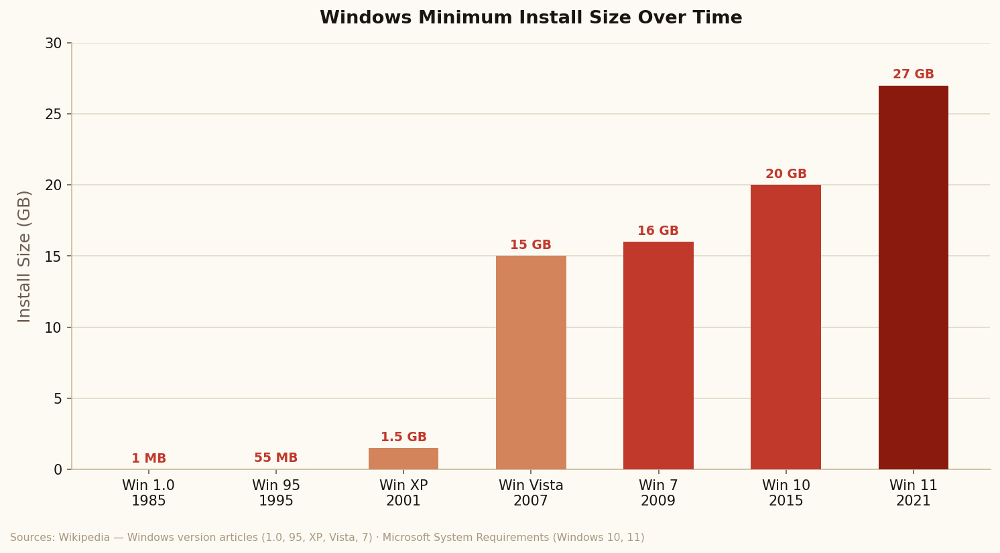
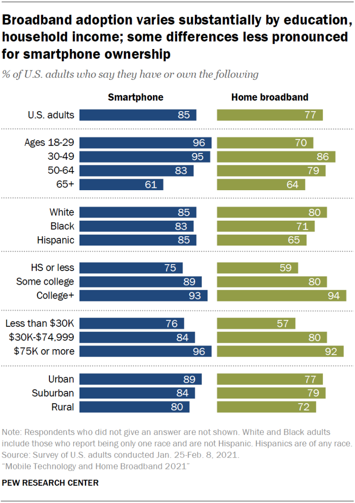

What are the consequences of a computing industry that advances faster than the consumers it serves?
Adrian Gevorgyan


The Hobbyist Era (1970s)
Computing started as a community project with no profit motive. The Homebrew Computer Club met in a garage in 1975. Members traded circuits, shared code, built their own machines.
The Acceleration
| Decade | Machine | 2026-adjusted price | What it could do |
|---|---|---|---|
| 1970s | Altair 8800 | ~$2,000 (247 Wall St.) | Toggle switches to input data, no display (CHM) |
| 1980s | IBM PC 5150 | ~$5,540 (247 Wall St.) | Word processing, basic spreadsheets (CHM) |
| 1990s | Gateway 2000 | ~$3,840 (247 Wall St.) | CD-ROM, early internet, basic multimedia (CHM) |
| 2000s | Gateway Performance 1500 | ~$4,880 (247 Wall St.) | Broadband internet, video, multitasking (CHM) |
| 2010s | Average consumer PC | ~$600 (247 Wall St.) | HD video, gaming, cloud, always connected (CHM) |
| 2026 | Average consumer laptop | ~$900 (247 Wall St.) | AI, 4K, instant everything (CHM) |
The Growth Curve


THE BASELINE
Software grows faster than hardware improves

How long a computer was expected to last
| Era | Avg. Replacement Cycle | Context | Source |
|---|---|---|---|
| 1980s | 10+ years | IBM PC ran the same software for a decade with zero degradation. Obsolescence was physical. | iFixit |
| Early 1990s | 7–8 years | Enterprise IT departments standardized 7-year refresh cycles. Hardware outpaced software demands. | iFixit |
| Early 2000s | 4 years | Windows XP drove upgrade pressure. Intel CEO later confirmed: "Four years was the average." | PCWorld / Krzanich |
| 2016 | 5–6 years | Cycles briefly lengthened as hardware improvement slowed, not because devices lasted longer, but because the next device wasn't meaningfully faster. | PCWorld / Krzanich |
| 2024 | 3.7 years | Windows 11 hardware requirements, AI feature gating, and planned obsolescence drive replacement even as hardware improvement slows. | Gartner via Sobrii |
NOTICES
Each generation accepts their reality as normal
Why the baseline shifts without resistance
The loop that sustains it
CONSEQUENCES
Over Users
- An IBM PC ran the same software for 10+ years with zero performance degradation (Computer History Museum)
- Obsolescence was physical. The hardware literally wore out or became too slow for new tasks
- No software update could make a working machine slower
- Average device lifespan: 7–10 years (iFixit)
- A working iPhone was deliberately slowed via software update. Apple admitted it, settled for $500M (Fortune)
- Obsolescence is engineered. Support windows are 3–5 years by design, not by physics (Gartner via Sobrii)
- Average device lifespan today: 3–4 years (iFixit)
- The device still works. The company decided otherwise. (Fortune)


- A PC bought in 1984 ran the same software in 1994 without degradation (Computer History Museum)
- Hardware was over-engineered. Built to outlast the software it ran
- IBM PC keyboards were rated for over 100 million keystrokes per key (Smithsonian)
- Repair was expected, documented, and supported by manufacturers
- MacBook butterfly keyboards (2015–2019) were so failure-prone Apple faced a $50M class action and abandoned the design (MacRumors)
- Devices are deliberately under-engineered for longevity to drive replacement cycles (iFixit)
- iFixit repairability score: iPhone 14 = 4/10. iPhone 15 = 7/10. (iFixit)
- Repair is restricted, undocumented, and voided by warranty (FTC, 2021)
- An IBM PC purchased in 1981 was still in active office use in 1991 (Computer History Museum)
- Obsolescence was physical. The hardware genuinely wore out (iFixit)
- A household might own one computer across an entire decade (Computer History Museum)
- E-waste wasn't a category. Not enough volume to matter (UNEP)
- At the old baseline pace, e-waste volume was low enough that no federal law was needed (UNEP)
- The EU ratified the Basel Convention banning e-waste exports in 1989 (Basel Action Network)
- The problem was small enough to be invisible to US legislators (EPA)
Can't Keep Up
- Proprietary screws, glue, software-paired parts block repair (FTC, 2021)
- FTC: “scant evidence to support manufacturers' justifications” (FTC, 2021)
- EU Right to Repair Directive passed 2024. US has nothing equivalent (EU Commission)
- Right to Repair Directive. 10 years of spare parts, March 2024 (EU Commission)
- France: mandatory repairability score on all electronics since 2021 (EU Commission)
- Universal USB-C charging law. Forced Apple to drop Lightning (charging cable) in 2023 (EU Commission)
- Basel Convention ratified. E-waste exports banned (Basel Action Network)
Widens
- A business with no computer competed on equal terms. product, service, location (US Chamber of Commerce)
- Job applicants mailed resumes (US Chamber of Commerce)
- Students used the library (Pew Research)
- Non-participation in technology was a neutral choice (US Chamber of Commerce)
- A business without a website, payment system, and social media is invisible (US Chamber of Commerce)
- Most job applications require online account and 24-hour email response (Pew Research)
- Tests, college apps, and homework are online-only (Pew Research)
- Non-participation is now a penalty. Even for people who didn't choose to participate (Pew Research)

A school district issues Chromebooks in 2019. By 2024, Google ends software support for that hardware generation. The devices still work physically but no longer receive security updates and are incompatible with new education platforms.
The district must replace thousands of functioning devices. Low-income districts can't.
THIS LEAVE US
What are the consequences of a computing industry that advances faster than the consumers it serves?
Consumers got genuine value and lost their ability to evaluate the industry simultaneously. The baseline shifted so far that the question of whether it was good or bad is almost impossible to answer from inside it.
What would change the situation
"1984." Computer History Museum, computerhistory.org/timeline/1984/. Accessed 27 May 2026.
"Affordable Connectivity Program." Federal Communications Commission, fcc.gov/affordable-connectivity-program. Accessed 27 May 2026.
"Altair 8800." emuStudio, emustudio.net/documentation/user/altair8800/. Accessed 27 May 2026.
"Apple Logo Black." Wikimedia Commons, Wikimedia Foundation, commons.wikimedia.org/wiki/File:Apple_logo_black.svg. Accessed 27 May 2026.
"Apple MacBook Butterfly Keyboard Lawsuit Gets Class Action Certification." MacRumors, 22 Mar. 2021, macrumors.com/2021/03/22/apple-butterfly-keyboard-lawsuit-class-action/.
"Apple Agrees to Up to $500M Batterygate Settlement." MacRumors, 2 Mar. 2020, macrumors.com/2020/03/02/apple-agrees-to-up-to-500m-batterygate-settlement/.
"Apple Responds to Backlash: 'We Apologize.'" Fortune, 28 Dec. 2017, fortune.com/2017/12/28/apple-iphone-battery-apology.
"Apple Starts iPhone Batterygate Payouts." MacRumors, 6 Jan. 2024, macrumors.com/2024/01/06/apple-starts-iphone-batterygate-payouts/.
"Aug. 12, 1981 — Developed in Boca Raton, First PC Released by IBM." Florida History Network, floridahistorynetwork.com/aug-12-1981---developed-in-boca-raton-first-pc-released-by-ibm.html. Accessed 27 May 2026.
"Defend Your Right to Repair." Electronic Frontier Foundation, eff.org/issues/right-to-repair. Accessed 27 May 2026.
"Carbon Footprint of a Laptop." Circular Computing, circularcomputing.com/news/carbon-footprint-laptop/. Accessed 27 May 2026.
"Chrome Devices Auto-Update Policy." Google Support, Google, support.google.com/chrome/a/answer/6220366. Accessed 27 May 2026.
"Computer History Timeline." Computer History Museum, computerhistory.org/timeline/computers/. Accessed 27 May 2026.
"Computer Lifespan: Real Numbers 2026." Sobrii, sobrii.io/blog/computer-lifespan-real-numbers-2026. Accessed 27 May 2026.
"Consumer Technology Association Forecast: U.S. Tech Industry Revenue to Rise 2.8% in 2024." Consumer Technology Association, 4 Jan. 2024, cta.tech/press-releases/consumer-technology-association-forecast-us-tech-industry-revenue-to-rise-28-in-2024.
"Cost of a Computer Every Year Since 1970." 247 Wall St., 16 Sept. 2021, 247wallst.com/special-report/2021/09/16/cost-of-a-computer-every-year-since-1970/.
"CPU Clock Speed History Graph." MS Codes, ms.codes/en-ca/blogs/computer-hardware/cpu-clock-speed-history-graph. Accessed 27 May 2026.
"CPU Clock Speed History Graph." UMA Technology, umatechnology.org/cpu-clock-speed-history-graph/. Accessed 27 May 2026.
"e-Trash Transparency Project." Basel Action Network, ban.org/trash-transparency. Accessed 27 May 2026.
"Electronics Donation and Recycling." United States Environmental Protection Agency, epa.gov/smm-electronics. Accessed 27 May 2026.
Flamm, Kenneth. "Measuring Moore's Law: Evidence from Price, Cost, and Quality Indexes." National Bureau of Economic Research, Working Paper No. 24553, Apr. 2018, nber.org/system/files/working_papers/w24553/w24553.pdf.
"Former Advisor to Steve Jobs Says New Apple CEO Is Exactly What's Needed." GeekWire, 2026, geekwire.com/2026/former-advisor-to-steve-jobs-says-new-apple-ceo-is-exactly-whats-needed-an-engineer-from-the-inside/.
"Global E-Waste Monitor 2020." United Nations Environment Programme, 2020, ewastemonitor.info/gem-2020/.
"Google Logo." Wikipedia, Wikimedia Foundation, en.wikipedia.org/wiki/Google_logo. Accessed 27 May 2026.
"GPU Prices Aren't Actually That Expensive: Analyzing Market Trends and Value." HDT Project, hdt-project.org/gpu-prices-arent-actually-that-expensive-analyzing-market-trends-and-value/. Accessed 27 May 2026.
"Historical Overview: CPU Clock Speed Advancements." Hardware Hub, hardwarehub.basalt.cc/blog/historical-overview-cpu-clock-speed-advancements-25. Accessed 27 May 2026.
"How Processor Speeds Have Increased Over the Decades." PC Site, Medium, pcsite.medium.com/how-processor-speeds-have-increased-over-the-decades-2f889c212525. Accessed 27 May 2026.
"IBM PC Keyboard." National Museum of American History, Smithsonian Institution, americanhistory.si.edu/collections/object/nmah_1323285. Accessed 27 May 2026.
"IBM Personal Computer 5150." National Museum of American History, Smithsonian Institution, americanhistory.si.edu/collections/object/nmah_1323282. Accessed 27 May 2026.
"Computer and Internet Use in the United States: 2021." United States Census Bureau, 18 June 2024, census.gov/newsroom/press-releases/2024/computer-internet-use-2021.html.
"Long-Term Price Trends for Computers, TVs, and Related Items." U.S. Bureau of Labor Statistics, 26 Oct. 2015, bls.gov/opub/ted/2015/long-term-price-trends-for-computers-tvs-and-related-items.htm.
"Microsoft Logo." Wikimedia Commons, Wikimedia Foundation, commons.wikimedia.org/wiki/File:Microsoft_logo.svg. Accessed 27 May 2026.
"Mobile Technology and Home Broadband 2021." Pew Research Center, pewresearch.org/internet/2021/06/03/mobile-technology-and-home-broadband-2021/. Accessed 27 May 2026.
"Moore's Law and the Secret World of Processing Power." UC Berkeley School of Information, ischoolonline.berkeley.edu/blog/moores-law-processing-power/. Accessed 27 May 2026.
"New Rules for More Durable Products and Better Consumer Rights." European Commission, 30 Mar. 2021, ec.europa.eu/commission/presscorner/detail/en/ip_21_5642.
"Nixing the Fix: An FTC Report to Congress on Repair Restrictions." Federal Trade Commission, May 2021, ftc.gov/reports/nixing-fix-ftc-report-congress-repair-restrictions.
"Old Electronics Are Poisoning Communities In Ghana. The Solution May Be Regulation." NPR, 5 Oct. 2024, npr.org/sections/goats-and-soda/2024/10/05/g-s1-6411/electronics-public-health-waste-ghana-phones-computers.
Pauly, Daniel. "Anecdotes and the Shifting Baseline Syndrome of Fisheries." Trends in Ecology & Evolution, vol. 10, no. 10, Oct. 1995, p. 430, doi.org/10.1016/S0169-5347(00)89171-5.
Perrin, Andrew, and Sara Atske. "Mobile Technology and Home Broadband 2021." Pew Research Center, 3 June 2021, pewresearch.org/internet/2021/06/03/mobile-technology-and-home-broadband-2021/.
Popescu, Marius. "I Visited Steve Jobs' Garage — Apple's First HQ." MacOClock, Medium, medium.com/macoclock/i-visited-steve-jobs-garage-apple-s-first-hq-apple-park-here-s-what-i-learned-0a2899fb509f. Accessed 27 May 2026.
"Processor History." Computer Hope, computerhope.com/history/processor.htm. Accessed 27 May 2026.
Roser, Max, et al. "Transistors per Microprocessor." Our World in Data, ourworldindata.org/grapher/transistors-per-microprocessor. Accessed 27 May 2026.
Sander, Alison. "How Long Does Apple Support iPhones?" Macworld, 2 Mar. 2023, macworld.com/article/675021/how-long-does-apple-support-iphones.html.
"Shifting Baseline Syndrome: Key to Growing Nature Disconnect." David Suzuki Foundation, davidsuzuki.org/expert-article/shifting-baseline-syndrome-key-to-growing-nature-disconnect/. Accessed 27 May 2026.
"Small Business Index." U.S. Chamber of Commerce, uschamber.com/small-business/small-business-index-q1-2026. Accessed 27 May 2026.
"Regulations for Electronics Stewardship." United States Environmental Protection Agency, epa.gov/electronics-batteries-management/regulations-electronics-stewardship. Accessed 27 May 2026.
"Remote Learning and Digital Equity During the Pandemic." Common Sense Media, 2021, commonsensemedia.org/press-releases/the-common-sense-census-presents-remote-learning-and-digital-equity-during-the-pandemic-2021.
"The Homebrew Computer Club." Bambi.net, bambi.net/bob/homebrew.html. Accessed 27 May 2026.
Ung, Gordon Mah. "The PC Upgrade Cycle Slows to Every Five to Six Years, Intel's CEO Says." PCWorld, 7 Nov. 2013, pcworld.com/article/415068/the-pc-upgrade-cycle-slows-to-every-five-to-six-years-intels-ceo-says.html.
Bluff, Julia. "Planned Obsolescence: Your Stuff Really Is Breaking Faster." iFixit, ifixit.com/News/7098/planned-obsolescence.
"Windows 10 Support Has Ended." Microsoft Support, Microsoft, support.microsoft.com/en-us/windows/windows-10-support-has-ended-on-october-14-2025-2ca8b313-1946-43d3-b55c-2b95b107f281. Accessed 27 May 2026.
"Windows 11 System Requirements." Microsoft Support, Microsoft, support.microsoft.com/en-us/windows/windows-11-system-requirements-86c11283-ea52-4782-9efd-7674389a7ba3. Accessed 27 May 2026.
"Windows 1.0." Wikipedia, Wikimedia Foundation, en.wikipedia.org/wiki/Windows_1.0. Accessed 27 May 2026.
"Wirth's Law." DevIQ, deviq.com/laws/wirths-law/. Accessed 27 May 2026.
"Wirth's Law." Wikipedia, Wikimedia Foundation, en.wikipedia.org/wiki/Wirth%27s_law. Accessed 27 May 2026.